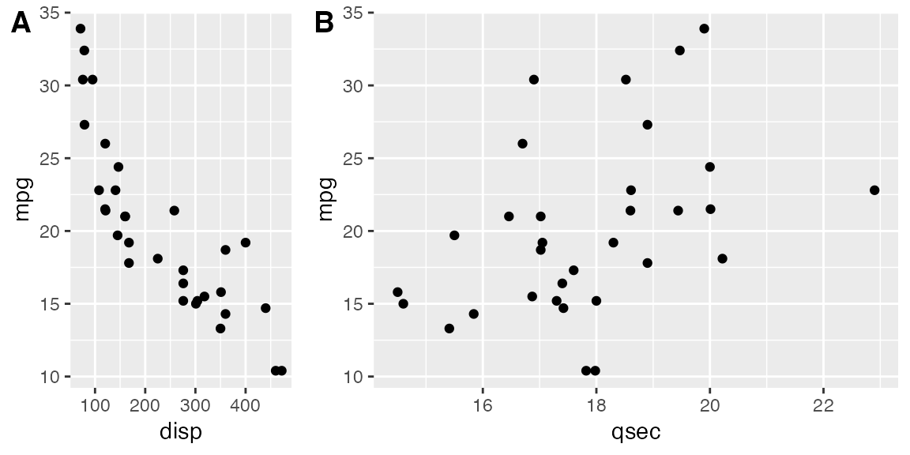
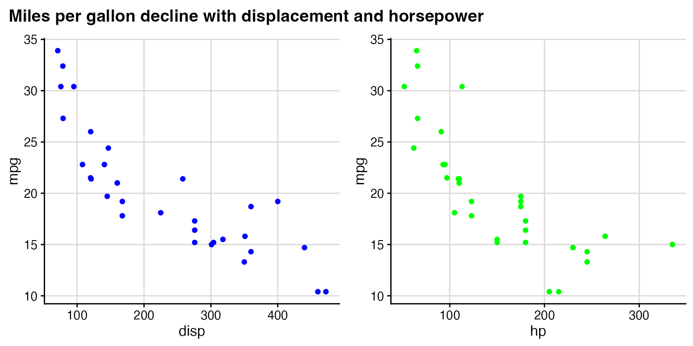

Basic use of plot_grid()
The plot_grid() function provides a simple interface for arranging plots into a grid and adding labels to them:
library(ggplot2)
library(cowplot)
theme_set(theme_cowplot(font_size=12)) # reduce default font size
plot.mpg <- ggplot(mpg, aes(x = cty, y = hwy, colour = factor(cyl))) +
geom_point(size=2.5)
plot.diamonds <- ggplot(diamonds, aes(clarity, fill = cut)) + geom_bar() +
theme(axis.text.x = element_text(angle=70, vjust=0.5, hjust = 0.9))
plot_grid(plot.mpg, plot.diamonds, labels = c('A', 'B'))
If you specify the labels as labels="AUTO" or labels="auto" then labels will be auto-generated in upper or lower case, respectively:


By default, the plots are not aligned, but in many cases they can be aligned via the align option:


For more complex combinations of plots that don’t have the same number of visual elements, alignment becomes more tricky. In those cases, you also have to specify the margin along which you want to align, via the axis option. For example, to align a faceted and a non-faceted plot such that the left axes are aligned, we can use the following:
plot.iris <- ggplot(iris, aes(Sepal.Length, Sepal.Width)) +
geom_point() + facet_grid(. ~ Species) + stat_smooth(method = "lm") +
background_grid(major = 'y', minor = "none") + # add thin horizontal lines
panel_border() # and a border around each panel
plot_grid(plot.iris, plot.mpg, labels = "AUTO", ncol = 1,
align = 'v', axis = 'l') # aligning vertically along the left axis
Supported plot formats
The function plot_grid() can handle several different plot formats, including the classes ggplot (created by the ggplot function), gtable (created from ggplot or from other grid graphics objects such as grob and gTree objects) and, if the package gridGraphics is installed, recordedplot (returned by recordPlot()). Since the code to create a recordedPlot object would ordinarily create an unwanted plot or file, a function creating a graphics based plot (plot, image, …) can be passed as well.
For example, the following creates a recordedPlot object by recording a previous plot (plot(sqrt)):
par(bg = "transparent", # switch off background to avoid obscuring adjacent plots
mar = c(3, 3, 1, 1) + .1, # reduce margins
mgp = c(2, 1, 0) # move axis labels closer to axis
)
plot(sqrt) # plot the square root function
Next we define a function that creates a plot:
# define the function
plotfunc <- function() {
par(bg = "transparent", # switch off background to avoid obscuring adjacent plots
mar = c(3, 3, 1, 1) + .1, # reduce margins
mgp = c(2, 1, 0) # move axis labels closer to axis
)
image(volcano)
}
plotfunc() # call the function to make the plot
And finally a plot (a circle) drawn directly with grid:

Now we combine all these plots with plot_grid():
plot_grid(plot.mpg, recordedplot, plotfunc, gcircle, labels = "AUTO", hjust = 0, vjust = 1,
scale = c(1., 1., 1., 0.9))## Warning: Package `gridGraphics` is required to handle base-R plots.
## Substituting empty plot.
## Warning: Package `gridGraphics` is required to handle base-R plots.
## Substituting empty plot. Note that the various alignment functions of plot_grid() only work with plots generated by ggplot, not with any of the other supported plot types.
Fine-tuning the plot appearance
You can adjust the label size via the label_size option. Default is 14, so larger values will make the labels larger and smaller values will make them smaller:

You can also adjust the font family, font face, and color of the labels:
plot_grid(plot.mpg, plot.diamonds, labels = "AUTO", align = 'h', label_fontfamily = "serif",
label_fontface = "plain", label_colour = "blue")
Labels can be moved via the label_x and label_y arguments, and justified via the hjust and vjust arguments. For example, to place labels into the bottom left corner, you can write:
plot_grid(plot.mpg, plot.diamonds, labels = "AUTO", align = 'h', label_size = 12,
label_x = 0, label_y = 0, hjust = -0.5, vjust = -0.5 )
It is possible to adjust individual labels one by one by passing vectors of adjustment values to the options label_x, label_y, hjust, and vjust (example not shown).
You can also adjust the relative widths and heights of rows and columns:

Nested plot grids
If you want to generate a plot arrangement that is not a simple grid, you may insert one plot_grid() plot into another:
bottom_row <- plot_grid(plot.mpg, plot.diamonds, labels = c('B', 'C'), align = 'h', rel_widths = c(1, 1.3))
plot_grid(plot.iris, bottom_row, labels = c('A', ''), ncol = 1, rel_heights = c(1, 1.2))
(Notice how we used rel_heights to make to bottom row higher than the top row. Also, we can’t auto-generate the labels in this case.) Alignment is a bit tricky in this case. However, it can be achieved using the align_plots() function. The trick is to first align the top-row plot (plot.iris) and the first botton-row plot (plot.mpg) vertically along the left axis, using the align_plots() function. Then these aligned plots can be passed to plot_grid(). Note that this vertical alignment does not interfere with the horizontal alignment of the bottom row.
# first align the top-row plot (plot.iris) with the left-most plot of the
# bottom row (plot.mpg)
plots <- align_plots(plot.mpg, plot.iris, align = 'v', axis = 'l')
# then build the bottom row
bottom_row <- plot_grid(plots[[1]], plot.diamonds,
labels = c('B', 'C'), align = 'h', rel_widths = c(1, 1.3))
# then combine with the top row for final plot
plot_grid(plots[[2]], bottom_row, labels = c('A', ''), ncol = 1, rel_heights = c(1, 1.2))